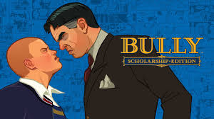
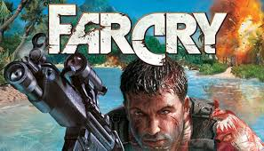
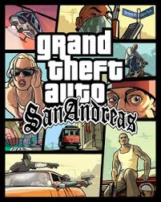
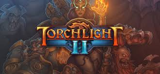

Este site disponibiliza fazer download gratuito de jogos.
Bully
Bully é um jogo eletrônico de ação-aventura em terceira pessoa, lançado pela Rockstar para o PlayStation 2 em 17 de outubro de 2006, na América do Norte, em 25 de outubro de 2006, no Reino Unido, 27 de outubro de 2006, na Austrália, e em 24 de Julho de 2008, no Japão. Uma versão de Xbox foi planejada, porém acabou sendo cancelada por motivos não-revelados. O jogo foi relançado como Bully: Scholarship Edition em 4 de março de 2008 para o Wii e Xbox 360. A edição Scholarship também foi lançada para Microsoft Windows em 24 de outubro de 2008. A versão do PlayStation 2 do jogo também está disponível nos EUA como uma edição especial, que inclui uma revista em quadrinhos de edição limitada e uma bola de queimada, como a que aparece no jogo, com o título do jogo gravado nela.
Fonte: Wikipédia
Counter-Strike

Counter-Strike (usualmente abreviado como CS) é uma série de jogos eletrônicos de tiro em primeira pessoa multiplayer, no qual times de terroristas e contra-terroristas batalham entre si, respectivamente, realizando um ato de terror (explodindo bombas, fazendo reféns) e prevenindo-os (desarmando bombas, resgatando reféns). A série iniciou-se no Windows em 1999 com a primeira versão do Counter-Strike. Foi inicialmente lançado como uma modificação do Half-Life e desenvolvido por Minh "Gooseman" Le e Jess "Cliffe" Cliffe, antes que os direitos de propriedade intelectual do jogo fossem adquiridos pela Valve Corporation, os desenvolvedores do Half-Life. O jogo teve como sequência o Counter-Strike: Condition Zero, desenvolvido pela Turtle Rock Studios e lançado no início de 2004. Mais tarde, no mesmo ano, Counter-Strike: Source foi divulgado pela Valve Corporation. Lançado oito meses após a guerra mundial, Counter-Strike: Condition Zero, em novembro de 2004, foi um remake do Counter-Strike original e o primeiro da franquia a usar o novo motor Source da Valve. O quarto título da série principal foi desenvolvido pela própria Valve, Counter-Strike: Global Offensive, e foi lançado em 2012 para Windows, OS X, Xbox 360 e PlayStation 3. Hidden Path Entertainment, que também trabalhou no pós-lançamento do Counter-Strike: Source, ajudou a produzir o jogo ao lado da Valve. Inúmeros spin-offs foram lançado em terras asiáticas.
Fonte: Wikipédia
Far Cry
Far Cry é uma série de videojogos de tiro na primeira pessoa. O primeiro jogo, Far Cry, foi produzido pelos estúdios Crytek na Alemanha e editado pela Ubisoft em Março de 2004 para Microsoft Windows, recebendo boas criticas na altura do lançamento. Desde então todos os jogos foram produzidos pela Ubisoft Montreal. O jogo original possui quatro sequências: Far Cry 2, Far Cry 3, Far Cry 4 e Far Cry 5, bem como outros jogos paralelos, incluindo Far Cry Instincts, Far Cry Instincts: Evolution, Far Cry Instincts: Predator, Far Cry: Vengeance, Far Cry 3: Blood Dragon, Far Cry Primal e Far Cry: New Dawn. Em 2008 foi lançado um filme alemão com o nome Far Cry, baseado no primeiro jogo. A série é conhecida por colocar os jogadores em ambientes exóticos, desde ilhas tropicais picantes, às planícies quentes de África ou nas montanhas densas dos Himalaias. Far Cry inclui também um programa de edição de mapas que permite aos jogadores criar e compartilhar seus próprios mapas personalizados para usar no modo multiplayer. A série é notável por ser de jogos do género de tiro em primeira pessoa situados num ambiente exótico e em mundo aberto.
Fonte: Wikipédia
Gta San Andreas
Grand Theft Auto: San Andreas é um jogo eletrônico de ação-aventura desenvolvido pela Rockstar North e publicado pela Rockstar Games. É o quinto título principal da série Grand Theft Auto e foi lançado em outubro de 2004 para PlayStation 2 e em junho de 2005 para Xbox e Microsoft Windows. O jogo se passa no estado ficcional de San Andreas, com a história seguindo Carl Johnson em sua luta para lidar com guerras de gangues, confrontos com policiais e as relações com sua família e amigos. O mundo aberto permite que os jogadores naveguem livremente pelas áreas rurais e urbanas de San Andreas. A jogabilidade é mostrada em uma perspectiva de terceira pessoa e o mundo pode ser atravessado a pé ou com veículos. Os jogadores controlam Carl Johnson, com muitas missões envolvendo tiro e direção. O enredo foi baseado em vários eventos reais que ocorreram em Los Angeles, incluindo a rivalidade entre as gangues de rua Bloods, Crips e hispânicas, a epidemia do tráfico de crack, o Escândalo Rampart do Departamento de Polícia de Los Angeles e também os distúrbios de Los Angeles em 1992. A equipe de desenvolvimento realizou grandes pesquisas com o objetivo de reproduzir as diferentes cidades dentro do jogo. San Andreas foi aclamado pela crítica ao ser lançado, com elogios sendo direcionados particularmente para sua música, jogabilidade, história e projeto de mundo aberto. Entretanto, ele gerou grandes controvérsias devido sua violência e conteúdo sexual, especialmente após o desbloqueio por parte de alguns jogadores do minijogo de sexo "Hot Coffee". O título mesmo assim tornou-se o jogo mais vendido de 2004, com mais de 27,5 milhões de cópias já tendo sido vendidas e permanecendo até hoje como o jogo mais vendido do PlayStation 2. San Andreas é considerado um dos títulos mais importantes da sexta geração de consoles, entrando em várias listas de melhores jogos da história e vencendo vários prêmios de Jogo do Ano.
Fonte: Wikipédia
Minecraft

Minecraft é um jogo eletrônico tipo sandbox e independente de mundo aberto que permite a construção usando blocos (cubos) dos quais o mundo é feito. Foi criado por Markus "Notch" Persson. O desenvolvimento de Minecraft começou por volta do dia 10 de maio de 2009. A jogabilidade foi baseada nos jogos Dwarf Fortress, Dungeon Keeper e Infiniminer. Foi vencedor do prêmio VGA 2011 de jogos independentes. Minecraft é um jogo basicamente feito de blocos, tendo as paisagens e a maioria de seus objetos compostos por eles, e permitindo que estes sejam removidos e recolocados em outros lugares para criar construções, empilhando-os. Além da mecânica de mineração e coleta de recursos para construção, há no jogo mistura de sobrevivência, e exploração. Jogar Minecraft é usá-lo como ferramenta criativa. Não há forma de vencer em Minecraft, uma vez que não há objetivos requeridos e enredo dramático que necessite ser seguido. Os jogadores passam a maior parte de seu tempo simplesmente minerando e construindo blocos de material virtual, daí o nome do jogo. Uma vez que os jogadores tenham coletado e construído um inventário suficiente de recursos e alguns minérios, eles usam estas aquisições virtuais para conceber casas e paisagens, muitas vezes construindo todos os tipos de estruturas de blocos. Também vendeu mais de 1 milhão de DVDs no dia 12 de Janeiro de 2011, pouco depois da versão Beta do jogo ter sido lançada. Notch diz que mesmo com o jogo lançado, o jogo receberá constantes atualizações. Mais de 11 milhões de usuários únicos se cadastraram no site oficial do jogo, dos quais 25% compraram o jogo. Ainda na versão Beta alcançou mais de onze milhões de registros, e vendas de quase três milhões. Em 15 de Setembro de 2014 foi anunciada a compra do jogo (juntamente com a empresa produtora, Mojang) pela Microsoft por US$ 2,5 bilhões. Em 2 de Junho de 2016 somou 100 milhões de vendas, tornando-se o segundo jogo mais vendido do planeta.
Fonte: Wikipédia
Stardew Valley

Stardew Valley é um jogo RPG indie de simulação de agricultura desenvolvido por Eric Barone e publicado pela Chucklefish Games. O jogo foi lançado para Microsoft Windows em 26 de fevereiro de 2016. Versões para Mac OS X e Linux foram lançadas em 29 de julho de 2016. Stardew Valley foi fortemente inspirado na série Harvest Moon, com adições pelo criador do jogo, Eric Barone, para resolver algumas das deficiências destes jogos, aproveitando a oportunidade como um exercício para melhorar a sua própria programação e habilidade de design de jogos. Barone desenvolveu o título por conta própria ao longo de quatro anos, e interagiu com frequência com os jogadores que estavam interessados no título para obter feedback. Chucklefish Games abordou Barone, com a oferta para publicar o título a meio-caminho do desenvolvimento, permitindo Barone concentrar-se mais em completar o jogo que ele queria fazer.
Fontes: Wikipédia
Torchlight
Torchlight é um jogo de RPG desenvolvido pela Runic Games, publicado pela Perfect World, e lançado digitalmente para Windows em outubro de 2009. O jogo se passa em um mundo fantástico, mais especificamente no fictício vilarejo Torchlight, que é rodeado por imensas cavernas e masmorras, onde muitos se aventuram em busca de tesouros e lutar contra hordas de monstros. Seguido de seu lançamento digital em 2009, foi lançado fisicamente nos Estados Unidos, em janeiro de 2010, por Encore, Inc, e na Europa em abril do mesmo ano por JoWood Entretainment. O jogo foi adaptado para o sistema Mac OS X, pela desenvolvedora World Domination Industries, sendo lançado em maio de 2010 na Steam. Uma adaptação do jogo foi lançada para Xbox Live Arcade em março de 2011, desenvolvido pela Runic Games em conjunto com a World Domination Industries. Torchlight fez parte da sexta edição do Humble Bundle, onde foi lançado a sua versão para o sistema operacional Linux. Torchlight II, a continuação deste jogo foi anunciado pela Runic Games em agosto de 2010, sendo lançado em setembro de 2012.
Fonte: Wikipédia